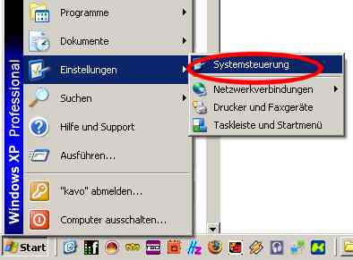
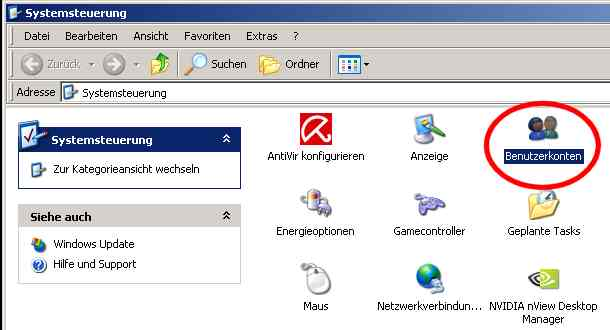
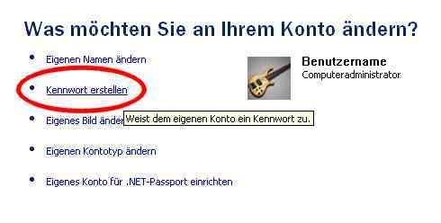
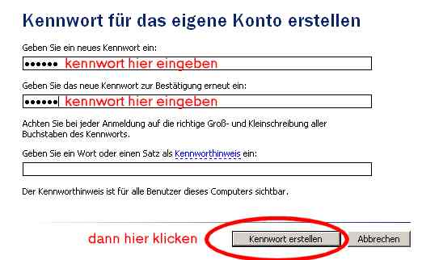
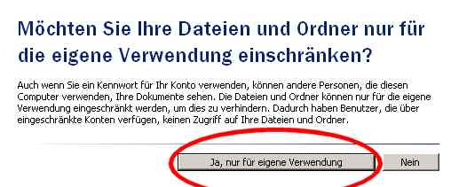

Wie man ein Kennwort unter Windows XP einrichtet :

1. Systemsteuerung aufrufen.

2. Den Punkt Benutzerkonten aufrufen.
3. Den gewünschten Benutzer auswählen, falls es mehrere sind, können die nächsten schritte für alle wiederholt werden.

4. Kennwort erstellen klicken.

5. In die oberen beiden felder das kennwort eingeben. das untere feld kann freigelassen werden.

6. Die Abfrage bestätigen.
Fertig !